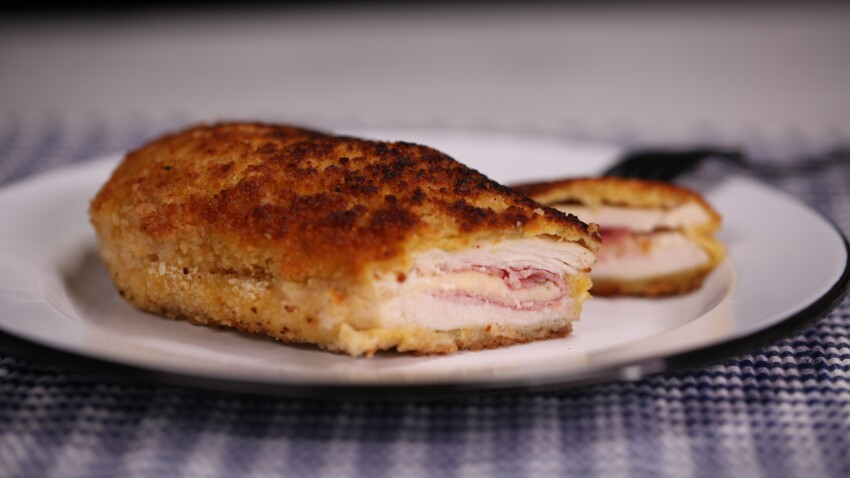

Cordon bleu

Description
Les cordons bleus c'est trop bon, préférez-les maison! Car avouons-le, ceux du commerce sont hyper gras et pas top... La version maison est bien plus gourmande, on a un vrai morceau de viande et très certainement moins de matières grasses, même si ça ne reste pas une recette light... Simple et rapide, les petits (et les grands) adoreront ;)
Ingredients
- 2 escalopes de dinde
- 2 tranches de jambon
- 2 tranches d'emmental
- 1 oeuf
- farine
- chapelure
- sel
- poivre
- beurre
Steps
- Placer les escalopes entre deux feuilles de film étirable et les aplatir à l'aide du plat de la lame d'un grand couteau. Une fois l'opération terminée, ôter le film étirable et replier les escalopes pour vérifier que les 2 côtés se rejoindront sans que rien ne déborde, si c'est le cas, couper les bords en trop. Puis saler et poivrer.
- Placer une tranche de jambon sur l'escalope et couper ce qui dépasse (l'idéal est d'avoir une tranche de jambon légèrement plus petite que l'escalope). Faire de même pour la tranche de fromage, qui devra elle, être légèrement plus petite que la tranche de jambon.
- Refermer les escalopes en deux en veillant à ce que rien de dépasse ! Si besoin s'aider de cure-dent (coupés en deux) pour maintenir les chaussons fermés.
- Préparer trois assiettes creuses, une pour la farine, une pour l’œuf battu en omelette et une pour la chapelure. Passer les cordons bleus dans la farine (enlever le surplus si nécessaire) puis dans l’œuf battu puis dans la chapelure. Pour une belle dorure renouveler une fois dans l’œuf battu et la chapelure. Les cordons bleus sont désormais panés.
- Dans une poêle faire fondre du beurre et placer les cordons bleus sur feu doux, les faire cuire environ 5 minutes de chaque côtés, en ajoutant du beurre avant de les retourner.
- Continuer la cuisson au four, 10 minutes à 180°C, dans un four préchauffé. Cela permettra à la viande d'être bien cuite, au fromage d'être complètement fondu et à la chapelure de ne pas brûler. Ou poursuivre la cuisson 10 minutes dans la poêle à feu très doux.